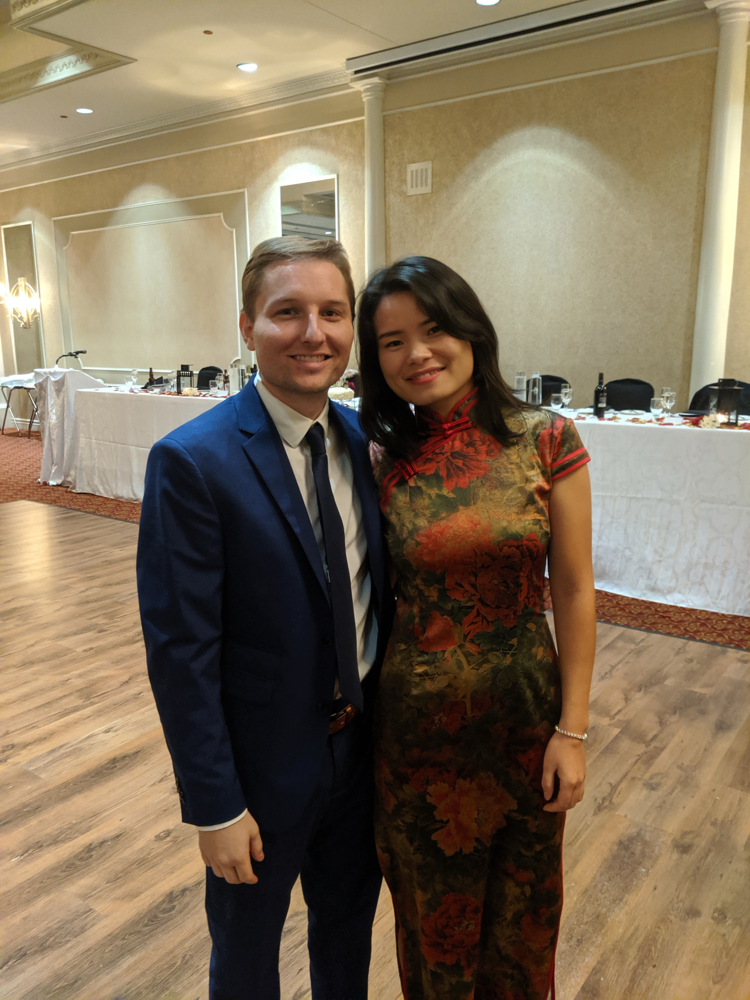
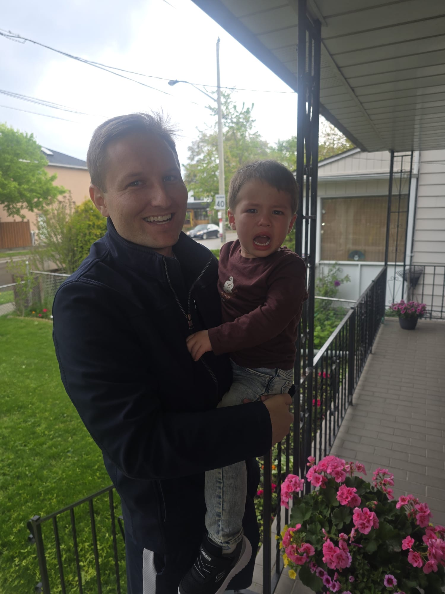

My daughter and I enjoying lunch
Friends wedding with my wife
Waking my grumpy son up after a nap
Email: chestnutavenue1990@gmail.com
Location: Boston, MA
In 2015 at age 25, I founded a logistics brokerage that managed freight operations for commercial manufacturers across the U.S. I built the company from the ground up, growing it from zero to $10 million in annual revenue. After a successful sale in 2021–2022, I’ve focused exclusively on investing in public equities.
Self Employed Business Analyst
Boston, MA | 2022–Present
• Evaluate investment opportunities in U.S. public equities
Founder
Charlotte, NC | 2015–2022
• Scaled freight brokerage from $0 to $10M in annual revenue
• Led operations, sales, hiring, and customer acquisition
• Managed a team of 8 employees and hundreds of independent contractors
Indiana Tech
B.S. in Economics, Graduated 2013
As of 2025, I have $4.3 million in assets and no debt. I don't know if full time investing is what I want to do forever I'm still figuring things out.
I do enjoy searching out value and following a group of stocks but the job can be a tad isolating. If you're interested in connecting for a casual chat on a stock or anything else feel free to send me an email or message on X. Always looking to make new friends!
Last updated: June 10, 2025